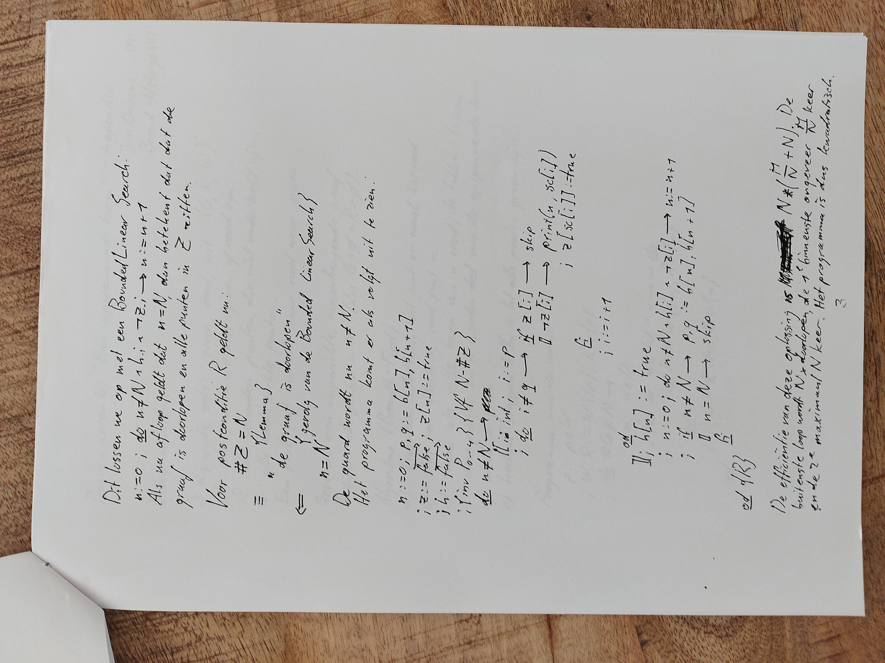
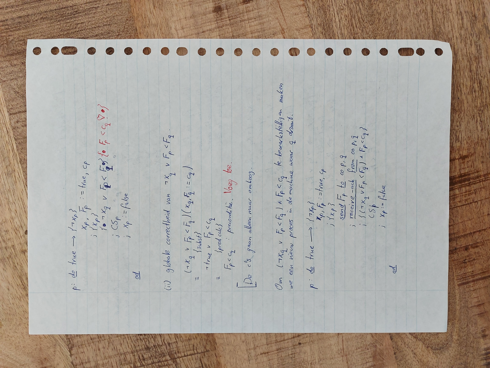

Just enough computer science for the busy developer
I studied computer science so you don’t have to
#enoughcs
Just enough computer science for the busy developer
I studied computer science so you don’t have to
#enoughcs
.
Jan Ouwens
 |
| #enoughcs
Why
Diversity matters
Lots of interesting people
Edsger Dijkstra

Katherine Johnson
Katherine Johnson
محمد خوارزمی

Muhammad al-Khwarizmi
Algorithm
Tony Hoare
Hoare triple
{P}
S
{Q}Hoare triple
{x = 3}
x += 1;
{x = 4}Q.E.D.
A simple algorithm
int[] haystack = ...;
int needle = ...;
int i = 0;
while (haystack[i] != needle) {
i += 1;
}
A simple algorithm
var b: array[0..N] of int = ...;
var n: int = ...;
i := 0
; do b[i] ≠ n →
i := i + 1
od
A simple algorithm
var b: array[0..N] of int = ...;
var n: int = ...;
{ ⟨∃x : 0 ≤ x < N : b[x] = n⟩ }
i := 0
{ i = 0 ⋀ ⟨∃x : 0 ≤ x < N : b[x] = n⟩ }
; do b[i] ≠ n →
{ 0 ≤ i < N ⋀ ⟨∀x : 0 ≤ x ≤ i : b[x] ≠ n⟩ ⋀ ⟨∃x : i < x < N : b[x] = n⟩ }
i := i + 1
{ 0 < i < N ⋀ ⟨∀x : 0 ≤ x < i : b[x] ≠ n⟩ ⋀ ⟨∃x : i ≤ x < N : b[x] = n⟩ }
od
{ 0 ≤ i < N ⋀ b[i] = n ⋀ ⟨∀x : 0 ≤ x < i : b[x] ≠ n⟩ }Q.E.D.
What it looked like for me
      
Donald Knuth

We live in an
age of libraries
Choose the best one
Complexity
How many steps?
Complexity
public int linearSearch(int needle, int[] haystack) {
for (int i : haystack) {
if (haystack[i] == needle) {
return true;
}
}
return false;
}Complexity
public int get(int[] ints, int index) {
return ints[index];
}Big O notation
if N is input size,
- O(N): linear search
- O(1): get
Big O notation
O(log N)
- Binary search
- Git bisect
Big O notation
O(N²)
public boolean hasDuplicates(int[] ints) {
for (int i : ints) {
for (int j : b) {
if (i != j && ints[i] == ints[j]) {
return true;
}
}
}
return false;
}Big O notation
O(2N)
public int fibonacci(int i) {
if (i <= i) {
return i;
}
return fibonacci(i - 2) + fibonacci(i - 1);
}Big O notation
O(N!)
Brute-forcing travelling salesman
Big O notation
| N | name |
|---|---|
| O(1) | constant |
| O(log N) | logarithmic |
| O(N) | linear |
| O(N²) | quadratic |
| O(2N) | exponential |
| O(N!) | factorial |
Big O notation
| N | 2 | 10 | 100 | 1000 |
|---|---|---|---|---|
| O(1) | 1 | 1 | 1 | 1 |
| O(log N) | 1 | 1 | 2 | 3 |
| O(N) | 1 | 10 | 100 | 1000 |
| O(N²) | 1 | 100 | 10.000 | 1.000.000 |
| O(2N) | 2 | 1024 | 1,2×1030 | 1,1×10301 |
| O(N!) | 1 | 3.628.800 | 9,3×10157 | ü§Ø |
Big O notation
| N | |
|---|---|
| O(1) | |
| O(log N) | |
| O(N) | |
| O(N²) | Polynomial ↑ |
| O(2N) | Slow ↓ |
| O(N!) |
Alan Turing

Alan Turing

Cracking codes
worse than polynomial
Verifying codes
polynomial
NP
“nondeterministic-polynomial”
finding an answer: slow
checking an answer: P
NP
Obviously, P ≠ NP
jè.
Depending on P≠NP
- banking
- secure messaging
- society as a whole
Grace Hopper
In practice
Know the big O of your algorithms
Know your
data structures
Array
| operation | big O |
|---|---|
| access | O(1) |
| search | O(N) |
| insert | O(N) |
| append | O(1) |
Linked list
| operation | big O |
|---|---|
| access | O(N) |
| search | O(N) |
| insert | O(1) |
| append | O(N) |
HashMap
| operation | big O |
|---|---|
| access | n/a |
| search | O(1) |
| iteration | O(N) |
| insert | O(1) |
Other data structures
- ArrayList
- LinkedList
- CopyOnWriteArrayList
- Stack
Vector
Other data structures
- HashSet
- EnumSet
- LinkedHashSet
- SortedSet
- TreeSet
Other data structures
- HashMap
- EnumMap
- LinkedHashMap
- SortedMap
- TreeMap
Other data structures
- Queue
- Deque
- …
Immutable collections
Vavr, Eclipse Collections, Guava
In Java
No:
ArrayList<String> myList = new ArrayList<>();In Java
Yes:
List<String> myList = new ArrayList<>();In Java
Yes:
List<String> myList = new LinkedList<>();In Java
Yes:
List<String> myList = new CopyOnWriteArrayList<>();Margaret Hamilton

Margaret Hamilton
Software engineering
- Programming
- Analysis
- Architecture
- UX design
- Testing
- Computer science
Wrapping up
Wrapping up
Many algorithms solve similar problems
Wrapping up
Many data structures solve similar problems
Wrapping up
Each performs differently
Wrapping up
Think about which is best for your situation
Now you know enough CS!
What’s next?
What’s next?
Keep this stuff in the back of your mind
What’s next?
Look it up when you need to choose
Tip: Google “Big O cheat sheet”
What’s next?
Read more about this
Tip:
What’s next?
Experiment
Tip:
Implement your own HashMap!Advanced tip:
Implement your own compression algorithm!
Questions?

#enoughcs
image credits: see website